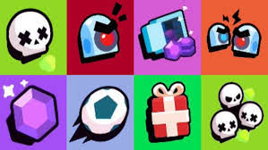

Modos de Juego
¿Qué modos de juego existen en Brawl Stars?
En Brawl Stars existen diversos modos de juego, cada uno pudiendo darte distintas recompensas dependiendo de su dificultad. Los modos pueden variar desde Supervivencia entre todos los jugadores hasta partidos de Futbol, además existiendo algunos permanentes, otros semanales y unos cuantos los cuales solo aparecen en eventos de temporada o únicos